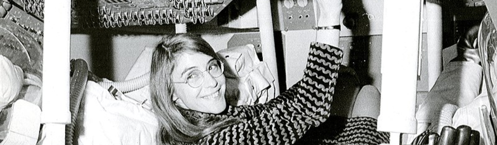

Grace Murray Hopper
Grace Hopper, almirante e pioneira da computação, criou a linguagem Flow-Matic e foi uma das primeiras programadoras do Harvard Mark I.

Augusta Ada Byron King
Augusta Ada Byron King, Condessa de Lovelace, atualmente conhecida como Ada Lovelace, foi uma matemática e escritora inglesa.

Margaret Hamilton
Margaret Heafield Hamilton é uma cientista da computação e engenheira de software dos Estados Unidos, nascida em 17 de agosto de 1936, em Paoli, Indiana.